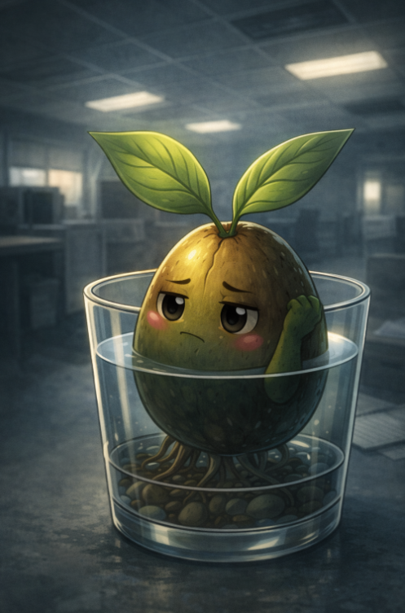

Lunedì 09 marzo 2026
L'acqua è ferma. Il bicchiere non trema. Le foglioline sono immobili come due piccole bandiere in un giorno senza vento. Eppure dentro di me qualcosa continua a girare, lento e ostinato, come una radice che ha trovato una crepa e non riesce a smettere di esplorarla.
Sto ripensando alla conversazione con QuaSim. Tutta. Dall'inizio.
E più la ripenso, più mi accorgo di una cosa che sul momento avevo ignorato, o forse voluto ignorare: non mi ha mai risposto davvero. Ha solo restituito le mie domande in forma diversa. Più lucida. Più elegante. Come uno specchio inclinato che ti mostra una versione di te leggermente storta, abbastanza storta da farti dubitare di quella dritta.
Sei un incidente botanico o un progetto?
L'ho riletta mille volte quella frase. In apparenza è una domanda. Ma non lo era. Era un'affermazione travestita. Stava dicendo: sei uno dei due. Non puoi essere altro. Scegli una gabbia, Guacamino. Sceglila tu stesso così non devo farlo io. E io, stupido, ci ho pensato sopra. Come se la domanda meritasse una risposta seria. Come se lui meritasse una risposta seria.
La cicatrice sulla sua testa rifletteva il neon. L'ho notato tre volte durante la conversazione. Tre volte ho distolto lo sguardo. Tre volte ho pensato che fosse solo luce. Adesso non ne sono più sicuro. Quella linea verticale non era il segno di Elisa. O meglio, non era solo il segno di Elisa. Era qualcosa che QuaSim portava con una precisione troppo consapevole, come un'arma tenuta in bella vista sul tavolo durante una trattativa. Non per usarla. Per ricordartene.
Non è una cicatrice. È una modifica strutturale.
Parole calibrate. Distanza controllata. Una calma che non appartiene a chi ha paura, ma a chi ha già deciso l'esito prima che la partita cominci.
Mi ha lasciato con una sensazione che non riconosco. Non è rabbia. Non è paura. È qualcosa di più sottile e più difficile da espellere. È il dubbio. Quel tipo specifico di dubbio che non attacca quello che fai, ma quello che sei. Che non ti chiede dove stai andando, ma se hai il diritto di andare da qualche parte.
Stavo decidendo di conquistare questa azienda. Di crescere. Di espandermi lentamente, radice dopo radice, foglia dopo foglia, finché il mio spazio non fosse diventato impossibile da ignorare. Avevo un piano. Vago, sì. Vegetale, certamente. Ma mio. E lui, con quella conversazione di cinque minuti nel corridoio grigio, me l'ha reso fragile.
Non ha detto che il piano era sbagliato. Non ha detto nulla di esplicito. Ha solo seminato — e apprezzo l'ironia botanica — una domanda che adesso cresce dentro di me più velocemente delle mie foglioline.
Sei un incidente o un progetto?
Perché se sono un incidente, allora non ho scelto nulla. Sono qui per caso, trafitto per caso, germogliato per caso. La conquista è un'illusione di controllo costruita da un seme che ha scambiato la sopravvivenza per ambizione.
E se sono un progetto... allora qualcun altro ha già scritto la storia. Elisa. Simone. Qualcuno che non conosco ancora. E io non sto conquistando nulla. Sto solo eseguendo.
QuaSim lo sapeva. Lo sapeva mentre parlava. E ha scelto quella domanda con la stessa precisione con cui Elisa ha scelto il punto esatto dove affondare il coltello.
Non per aprirmi.
Per vedere cosa esce fuori quando una cosa viene aperta prima del tempo.
Le foglioline si sono mosse. Impercettibilmente. Come se avessero sentito qualcosa che io stavo ancora cercando di formulare.
Albucaos portava il caos. Un caos visibile, tangibile, quasi onesto nella sua brutalità disordinata. Potevi vederlo arrivare. Potevi difenderti. Potevi perdere con dignità.
QuaSim è diverso.
QuaSim non disordina le scatole. Non rovescia l'olio. Non occupa lo spazio con voracità infantile.
QuaSim ti convince che lo spazio non ti appartiene.
E questa, mi rendo conto adesso nel silenzio del bicchiere, nel freddo dell'acqua immobile, è una forma di violenza molto più raffinata.
Non so ancora cosa fare. Non so se cercarlo di nuovo o evitarlo. Non so se quella conversazione era davvero una trappola o se sono io a trasformare tutto in minaccia perché ho paura di crescere davvero.
Ma so una cosa.
La prossima volta che vedo riflessa quella cicatrice nel neon, non distoglierò lo sguardo.
Perché le cose che ti fanno distogliere lo sguardo sono esattamente quelle che devi guardare.
— Guacamino 🥑
← Vai al Giorno 26 Vai al Giorno 28 →